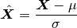
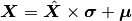

poseutils.datasets.transformation package
Submodules
poseutils.datasets.transformation.CalculateMetrics module
- class poseutils.datasets.transformation.CalculateMetrics.CalculateMetrics[source]
Bases:
poseutils.datasets.transformation.Transformation.TransformationNo-op Transformation class to indicate dataset metrics need to be recalculated.
poseutils.datasets.transformation.CropAndScale module
- class poseutils.datasets.transformation.CropAndScale.CropAndScale(low=0, high=256, *args, **kwds)[source]
Bases:
poseutils.datasets.transformation.Transformation.TransformationClass to apply crop and scale transformation. Makes call to poseutils.composite.scale_into_bounding_box_2d.
- Parameters
low (int, optional) – Lowest value of the bounding box range, defaults to 0
high (int, optional) – Highest value of the bounding box range, defaults to 256
poseutils.datasets.transformation.Normalize module
- class poseutils.datasets.transformation.Normalize.Normalize(skip_root=True)[source]
Bases:
poseutils.datasets.transformation.Transformation.TransformationApplies z-score normalize transformation on the data.
- Parameters
skip_root (bool, optional) – Whether to skip root/hip, defaults to True
- __call__(X, mean, std, **kwds)[source]
Applies transformation

- Parameters
X (numpy.ndarray) – Joint positions (NxMxI), M = 14 or 16, I = 2 or 3
mean (numpy.ndarray) – Mean values to use when normalizing (MxI)
std (numpy.ndarray) – Standard deviation values to use when normalizing (MxI)
- Returns
Transformed joint positions (NxMx2), M = 14 or 16
- Return type
numpy.ndarray
poseutils.datasets.transformation.RootCenter module
- class poseutils.datasets.transformation.RootCenter.RootCenter(root_idx=0)[source]
Bases:
poseutils.datasets.transformation.Transformation.TransformationSubtracts the root/hip position from the rest of the joints
- Parameters
root_idx (int, optional) – Root/hip index, defaults to 0
poseutils.datasets.transformation.Transformation module
poseutils.datasets.transformation.Unnormalize module
- class poseutils.datasets.transformation.Unnormalize.Unnormalize(skip_root=True)[source]
Bases:
poseutils.datasets.transformation.Transformation.TransformationUndoes z-score normalization transformation on the data.
- Parameters
skip_root (bool, optional) – Whether to skip root/hip, defaults to True
- __call__(X, mean, std, **kwds)[source]
Applies transformation

- Parameters
X (numpy.ndarray) – Joint positions (NxMxI), M = 14 or 16, I = 2 or 3
mean (numpy.ndarray) – Mean values to use when normalizing (MxI)
std (numpy.ndarray) – Standard deviation values to use when normalizing (MxI)
- Returns
Transformed joint positions (NxMx2), M = 14 or 16
- Return type
numpy.ndarray